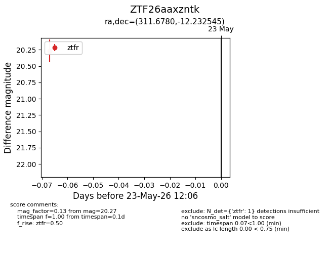
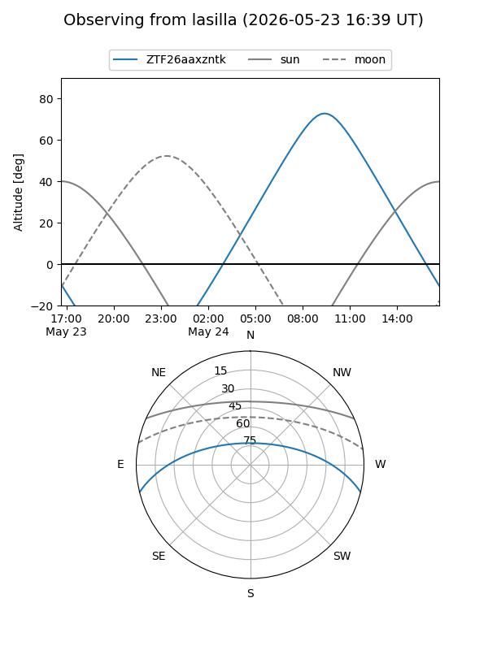
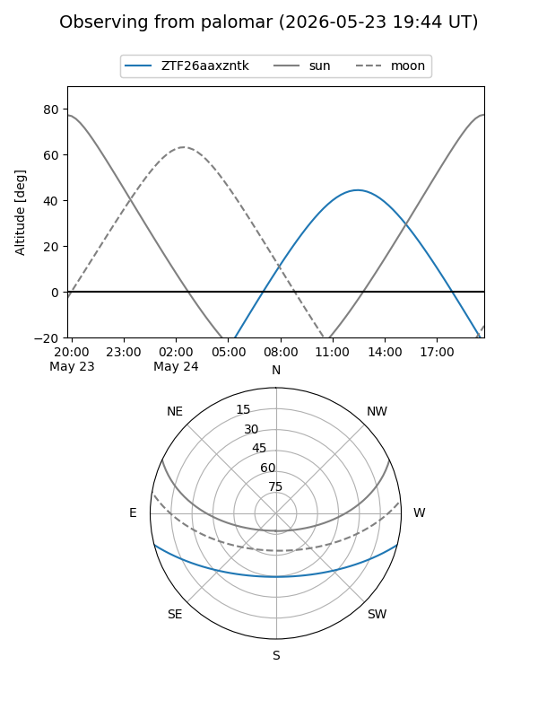

ZTF26aaxzntk
Target ZTF26aaxzntk at 2026-05-23 12:08
Aliases and brokers:
lsst-FINK: link
lsst-Lasair: link
lsst-ALeRCE: link
ztf-FINK: link
ztf-Lasair: link
ztf-ALeRCE: link
alt names
ZTF26aaxzntk (ztf,fink_ztf)
Coordinates:
equatorial (ra, dec) = 311.6780,-12.23255
equatorial (HMS+DMS) = 20:46:42.72,-12:13:57.16
galactic (l, b) = (34.6872,-31.05635)
Flags:
Photometry:
last ztfr=20.27
1 ztfr detections
Lightcurve

Visibility


Additional plots